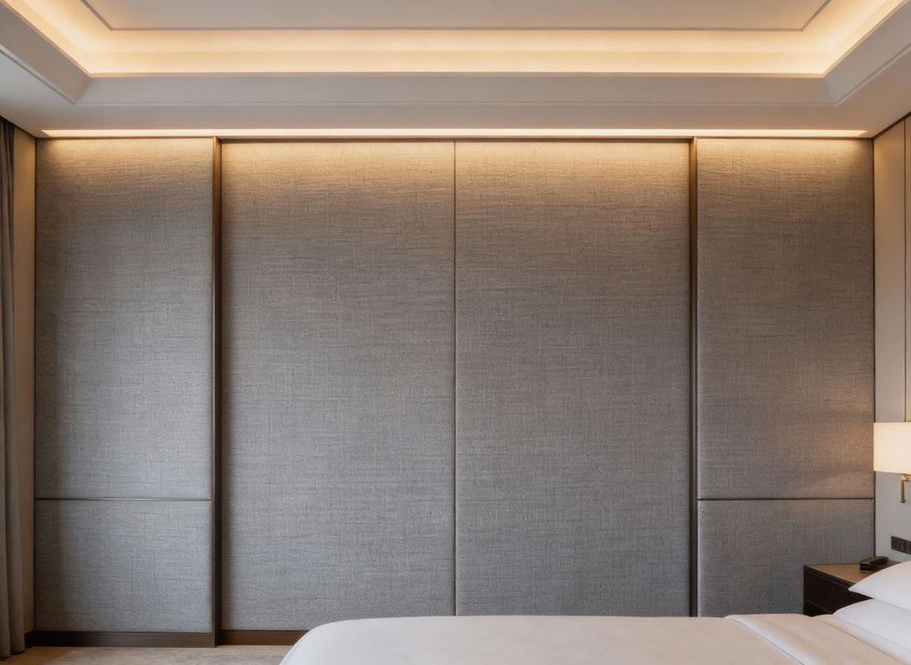
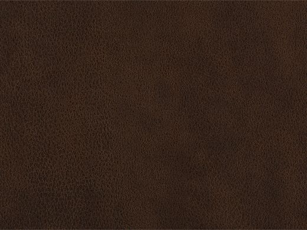

IE063
Light Blue Fabric Vinyl Wrap
Light blue fabric interior film offering a clean textile finish. Suitable for modern interior surfaces and decorative applications.
Roll size 1.23m x 50 m
KOINTEC 27/28 · 3 finishes
KOINTEC fabric and leather interior film adds woven and leather textures to headboards, wall panels, reception desks and hospitality joinery, in a surface that wipes clean. This page lists every Fabric & Leather finish in the KOINTEC 27/28 catalogue with its code. Compare the swatches, see each finish in an interior, and send the code to our team for a quote.



It is a self-adhesive architectural film, made in Korea, that gives existing surfaces such as cabinets, doors, walls and furniture a fabric & leather finish without replacing them.
3 finishes across Fabric, Leather. Each one is listed on this page with its product code.
From XESS Trading LLC in Al Quoz, Dubai, the authorized KOINTEC distributor in the UAE since 2016, through interiorfilm.com. We also supply Saudi Arabia and Qatar.
Send the product codes you like to our team through the contact page on interiorfilm.com, by WhatsApp on +971 55 217 8882 or by email to info@xesstrading.com.